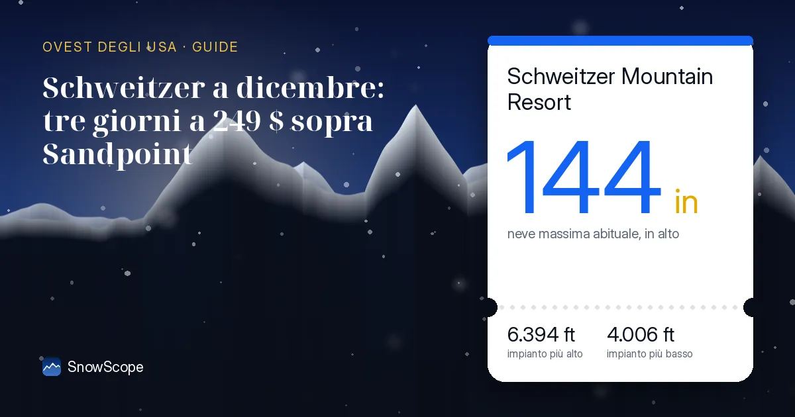

Schweitzer a dicembre: tre giorni a 249 $ sopra Sandpoint
Schweitzer è una grande montagna con una base da piccola città: Sandpoint e il lago Pend Oreille sotto, una lunga cresta di impianti sopra. Per un viaggio di dicembre, il suo 3-Pack a 249 $ per l'inverno 2026/2027 trasforma un weekend in resort in qualcosa vicino al budget di una piccola stazione.
Le previsioni neve in tempo reale per Schweitzer Mountain Resort nell'app SnowScopeAltezza neve, allerte powder e mappa 3D, gratis.
Dal lago alla cresta
Sulla nostra mappatura Schweitzer ha 10 impianti e circa 46 mi (74 km) di piste, da circa 4.010 ft (1.221 m) fino a 6.390 ft (1.949 m). Questo intervallo di altitudine spiega il suo dicembre: la base e la cima vivono in inverni diversi per gran parte del mese.

Il 3-Pack, in parole semplici
Il 3-Pack dà tre giorni di sci per 249 $ e vale solo per l'inverno 2026/2027. Il resort stesso lo indica come 83 $ al giorno. Non siamo riusciti a leggere un prezzo di cassa per una giornata intera sul suo sito, quindi confrontiamo con il pacchetto piuttosto che con un singolo biglietto.
Tre giorni si adattano anche alla neve: non dovete puntare tutto su una sola data di dicembre.

Un grande divario tra fondo e cima
In un tipico 15 dicembre, la base ha 22 in (55 cm), mezza montagna a circa 5.200 ft (1.585 m) 35 in (90 cm), e la cima 54 in (138 cm). Per il giorno di Natale la cima raggiunge 60 in (152 cm) e mezza montagna 43 in (109 cm).
Le probabilità a mezza montagna sono forti: l'85 % degli inverni aveva 20 in (50 cm) o più il 15 dicembre e il 98 % entro il 25 dicembre. La quota di settimane con buona neve lì cresce dal 72 % nella prima settimana di dicembre al 98 % nella settimana di Natale. La neve persistente arriva tipicamente a mezza montagna a inizio novembre, più tardi che nelle stazioni delle Rockies.
Confronto con Lookout Pass e Brundage
Lookout Pass, a est sulla I-90 al confine con il Montana, fa pagare 63 $ infrasettimanale con prenotazione e aveva 30 in (75 cm) a mezza montagna in un tipico 15 dicembre. Brundage, molto più a sud vicino a McCall, fa partire i biglietti dinamici da 65 $ in alcuni giorni e aveva 30 in (77 cm).
Schweitzer costa più al giorno dei loro biglietti più economici, ma ha la neve più profonda in cima delle tre e molto più terreno.
Allora e oggi, e lo scorso inverno
Mezza montagna aveva 41 in (104 cm) in un tipico 15 dicembre nei primi 15 inverni della nostra serie storica, e ogni inverno superava i 20 in; negli ultimi 15 inverni erano 32 in (80 cm) e il 73 %. Lo scorso inverno è stato molto magro a quella data, con 6 in (16 cm) a mezza montagna. Un pacchetto da tre giorni permette di aspettare i giorni giusti.
Consigli per sciatori
- Comprate il 3-Pack prima del viaggio e distribuite i giorni sulla seconda metà di dicembre.
- La strada di montagna da Sandpoint è ripida: portate le catene o usate gomme da neve.
- A inizio dicembre, salite agli impianti superiori: la base può essere sottile.
- Nebbia e nubi basse sono comuni qui: gli occhiali con lente per scarsa luce aiutano.
Riferimenti e crediti
- Schweitzer, lift ticket 3-Pack 2026/2027 (official) www.schweitzer.com/plan-your-trip/deals-and-packages/lift-ticket-3pack
- Lookout Pass, lift tickets 2026-2027 (official) skilookout.com/lift-tickets/
- Brundage Mountain, daily lift tickets (official) brundage.com/daily-lift-tickets/
- OpenSkiMap (mapped lifts and runs) openskimap.org/
- avalanche.org, US avalanche centers and forecasts avalanche.org/
Su questi numeri
Numeri della neve: storico neve SnowScope, 46 inverni passati (1980-81 - 2025-26) alle quote indicate (base, metà, vetta), una ricostruzione della neve passata per un'area corretta per la quota (basata su ERA5-Land; Snow_Hydro 1 km per il Marocco), non i bollettini della località. Neve attuale: la mappa SnowScope. Impianti, piste e quote: mappatura OpenSkiMap. Prezzi: le pagine ufficiali elencate qui sotto, lette il 13 novembre 2026; i prezzi dinamici cambiano con la data e la domanda.
Bollettini valanghe ufficiali: avalanche.org (US national portal)
Cita questo articolo
Per ricerca, didattica o stampa: numeri e grafici sono liberamente riutilizzabili con licenza CC BY 4.0 citando così.
SnowScope (2026), Schweitzer a dicembre: tre giorni a 249 $ sopra Sandpoint, https://snowscope.app/blog/it/2026/11/schweitzer-sandpoint-december-3-pack-deal.html, consultato il 2026-11-14
SnowScope (Atlas Labs). (2026, November 14). Schweitzer a dicembre: tre giorni a 249 $ sopra Sandpoint. SnowScope snow reports. https://snowscope.app/blog/it/2026/11/schweitzer-sandpoint-december-3-pack-deal.html
BibTeX
@misc{snowscope2026schweitzersandpointdecem,
author = {{SnowScope (Atlas Labs)}},
title = {Schweitzer a dicembre: tre giorni a 249 $ sopra Sandpoint},
year = {2026},
month = nov,
howpublished = {\url{https://snowscope.app/blog/it/2026/11/schweitzer-sandpoint-december-3-pack-deal.html}},
note = {Published 2026-11-14 20:57 UTC; accessed 2026-11-14}
}· CC BY 4.0 · Metodi, dati e strumenti →
Schweitzer Mountain Resort: neve e temperatura per quota, quest'inverno vs lo scorso (strumenti) →
Segui Schweitzer Mountain Resort
Gratis: un messaggio quando arriva la neve e il meteo ogni mattina.